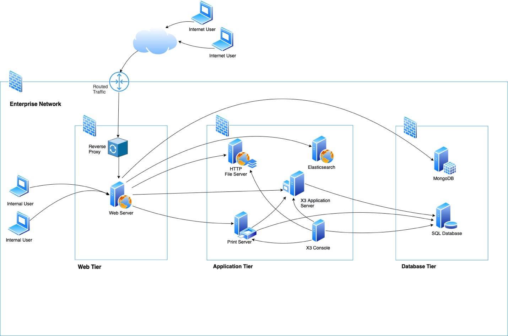

Security Best Practices
Security represents a strong focus in the design and development of Sage X3. The solution has been audited and certified by an external authority for safe operation in the Cloud.
A security policy is always compromised by its weakest link. It is therefore critical to pay attention to the security of your systems and implementation. Use all available tools for this.
This document summarizes what you should pay attention to when implementing Sage X3.
General security guidelines
Securing Sage X3 on-premise architecture is not optional
Customer details, financial records, staff information – you will store sensitive data using your business software. It might be stored on your servers if you have in-house systems or outside your business, if you use cloud computing services.
You get maximum security for your data without any action if you use Sage X3 Cloud. However, if you choose to install Sage X3 as an on-premise instance, or if you host it with a non-Sage managed cloud provider, there are a few rules to follow.
Wherever your data is, you must take a multi-layered, industry-proven approach to keep your data where it belongs and as secure as possible. This document reviews the main controls you should implement to secure your data.
General guidelines
Sage recommends following the general guidelines below to ensure security.
Use HTTPS for production instances
Sage X3 is a web application that must be accessed using an HTTPS connection.
Keep your systems up to date
Always apply the latest system and software fixes. This includes the latest Sage X3 patches. Our updates can provide enhancements to security, performance, and functionality.
Use network layer controls
Use local firewalls on your Sage X3 servers or network layer controls to lock any IP port that is not needed for Sage X3 operation or user access. Typically for the non-production deployments, if all Sage X3 components are installed on a single server, Sage X3 only needs the HTTPS ports to function. For multiple-server installations, you need to open the ports (or ranges of ports) that Sage X3 components use to communicate with each other.
Recommended on-premises deployment architecture
In the on-premises deployment scenario, the customer is responsible for network and operating system security. The safety of an on-premises installation depends on the security measures that are in place within your network. Sage has achieved excellent results in realizing optimally secure infrastructure for Sage X3 applications in cooperation with the in-house IT specialists concerned.
Sage recommends the following deployment architecture, which is quite similar to the cloud deployment architecture.
The Sage X3 ERP is accessed via a web server that routes the traffic to the relevant environment whereby the web server is responsible for the TLS connections. We also recommend implementing a relevant security perimeter in front of the web server in case the application(s) built in Sage X3 are exposed to external users.
We recommend configuring the database for dedicated use by Sage X3. For supported versions of web servers, operating systems, and databases, see the system requirements for the latest Sage X3 release as described in the release Reference Guide.

The architecture you implement is key to your security, especially if your system can be accessed from the public Internet. To connect your systems and make them available from the Internet, you have to configure network layer controls before enabling internet access.
Network layer control
Any secure deployment requires some measure of network access control. Sage recommends a three-tier architecture for Sage X3 production deployments, which includes appropriate network layer controls. The goal of network access control is to restrict communication to the application systems and Other communication attempts are blocked.
We recommend to logically segment the subnets and restrict the communication between the tiers. Best practices for logical segmentation include:
- Don't assign allow rules with broad ranges
- Segment the larger address space into subnets
- Create network access controls between subnets
- Restrict Internet connectivity directly to the web server
Sage X3 uses several components that communicate together through IP ports. The only port that actually needs to be accessed by users for Sage X3 to operate is the HTTPS port (443 by default). All other ports can (and must) be protected from external access, especially if the server is accessible from the Internet. The MongoDB port (27017 by default) and the Elasticsearch port (9200 by default) are examples of ports that should not be available.
The servers on which Elasticsearch is installed must not be exposed over the network. It should only be accessible from the node.js servers. The Sage X3 platform sends the query to Elasticsearch with additional security filters, based on the privileges of the user. When you access the Elasticsearch server directly, you can bypass these security filters: this compromises security by returning all the relevant indexed data.
In addition to the above network layer controls, we recommend configuring a proxy layer with all the protection mechanisms mentioned below:
- A DDOS attacks prevention system
- A web application firewall (WAF) for the web component preventing application-level attacks
- Reverse proxy in place to offload communication directly from internet
Please refer the ports/services table for creating necessary access rules between the logical segments.
| Component | Open port | Accessed by | Port Access |
| AdxAdmin | 1895 (formerly 1818) | X3 Console | Strictly localhost only |
| X3 server runtime | 20100, 20101, .. (formerly 1801, 1802, …) | Node web server, Print Server, Other X3 server runtime if any | Restricted access to necessary services only |
| Print server | 1890 | Node web server, X3 server runtime | Restricted access to necessary services only |
| Node web server | 443 | Browser | Refer to the recommendations provided |
| Node web server | 8124 | Node web server | Restricted access to necessary services only |
| Node web server (debug proxy) | 9514 | Node web server,X3 server runtime | Development environment only with restricted access to necessary services only |
| MongoDB | 27017 | Node web server | Restricted access to necessary services only |
| RDB | 1521 (Oracle), 1433 (MSSQL) | X3 server runtime, X3 services component | Restricted access to necessary services only |
| ElasticSearch | 9200 | Node web server | Restricted access to necessary services only |
Important!
The AdxAdmin service running on port 1895 (formerly 1818) should not be exposed to the network and should be limited only to localhost.
Network security
- Only open access to the servers on the ports that are necessary for normal use. For example, only open the HTTPS (443 by default) port on the server running node.js. Note: Make sure that the first port in the host setup (Administration > Administration > Servers > Hosts) is not used for SSL connection.
- Don't set port 443 on the first line of the connection grid.
- Install and set up network layer controls.
- Client connections must always use HTTPS.
- In order to secure the connection between different environments, Sage X3 uses certificates, which are generated during installation with a master certificate. The private key of this master certificate must be kept safe on a computer with restricted access. Refer to Certificate Installation for more information on certificates.
- Ensure enabling TLS 1.2 or above and strong cipher suites at the web layer.
Database security
Databases must be secured following the principles listed below.
Relational database
The server on which the relational database is installed must not be exposed over the network.
Only the SAFE X3 server (application/run-time) and the report server can access RDBMS. Execution servers and report servers are proxies that get the data requested by external services.
Never set up the database connection to the platform with the database administrator account. This account is only required for some configuration steps, and it can be changed afterward.
MongoDB database
The servers on which the document database is installed must not be exposed over the network. Only the node web server needs access to the MongoDB database.
Please follow the official guide on Mongo DB security.
Consider getting the enterprise version of MongoDB for additional security.
Platform Security
Secure your servers with tight user access rights
The servers that host Sage X3 components contain configuration files and other data vulnerable to inside threats. Administrators should be the only roles allowed to log in to the servers. Make sure that you set up users for Sage X3 Administration with the appropriate rights to the relevant directories.
Caution: Do not mix Server Administrators with Sage X3 Administrators.
Sage X3 servers should be built using industry-standard guidelines (such as the Center for Internet Security benchmarks) which are freely available. It is also possible to use the CIS approved images for the installations to meet the security standards.
Stop or disable services that are not required
Sage recommends using CIS benchmark controls for operating system hardening.
Be sure to not have running services you do not need. A good practice is to put the start mode of those services to Disabled or Manual if you think you may need it at some point.
Important!
The Sage X3 Adxmin service is required only when configuring the solution and thus can be put to Manual start mode.
System security
The filesystem security of the different servers should be implemented with the relevant tools (antivirus, network access security, etc.) at the right level. Make sure these tools do not cause performance issues. For example, avoid running a continuous antivirus scan on a database server.
On application and process servers, the SAFE X3 engine runs in a sandbox. This allows you to control the system commands that are launched, and the location where files can be read, created, modified, or deleted. This prevents malicious code written for the execution engine from running operating system commands (by using System instructions).
Setting up the sandbox is recommended, especially if you operate in a Cloud, or if the SAFE X3 code is supplied by external vendors.
Please, refer to the Sandbox configuration file documentation to ajust it according to your needs.
Authentication
Use advanced authentication
Sage X3 supports several identity providers, such as:
- Sage ID
- OAuth2 (with a Gmail account or a Microsoft account)
- Saml2
- LDAPS (for on-premise installations only)
This improves security by offloading the management of user credentials that do not transit through the ERP (when integrated with Oauth2 identity providers or with Sage ID). It also improves the user experience by providing a Single Sign-On (SSO) experience.
Note: You can securely store the credentials you generate in password managers. You can use any of the authentication methods described above, but you should never use the basic authentication in production, as it is only intended for demos.
Caution: A user account should never be shared to ensure traceability of user actions.
Use strong passwords
Make sure you change the default Sage X3 Administrator password to a strong password after the application setup. Please consider the following recommendation as a minimum:
- Contain 12 characters minimum (the longer the password is, the stronger it is)
- Use a combination of digits, uppercase and lowercase letters, and symbols (such as @ # $ % ! ? &, etc.)
- Not contain words that can be found in dictionaries or that are part of the username
- Not contain a keyboard pattern such as qwerty
- Not contain your date of birth
Authorization
On the web platform
Once authenticated, users are connected to the platform with a user login account. Each user belongs to at least one group, and each group is associated with a role.
When logging in, the user can select the role to use among the list of authorized roles. This role is linked to a security profile which is associated with a level (0 to 99, 0 being the most powerful).
The security profile defines the privileges a user has on platform operations. Make sure you assign a set of roles with appropriate security profiles to each user. As the platform administrator, you can define as many roles and security profiles as necessary.
Always apply the least privilege principle when designing your roles.
A security profile can grant twelve different privileges, of which the following are critical for security:
- myProfile allows users to modify information related to their own identification (name, password, email address, photo). It also grants them read access to their own context (sessions they opened, endpoints they have access to, etc.). This access can be granted to most users.
- users allows the definition of new users and should be granted only to platform administrators. However, modification rights can be granted to some key users. They will then be able to modify the information associated to users with lower security profiles.
- technicalSettings allows access to the technical configuration (endpoints, Sage X3 solutions, etc.). It should only be granted to the persons in charge of the platform technical administration.
- Development allows access to resources for users working on extending the standard by bespoke or vertical developments.
Note: technicalSettings is typically a privilege that should be assigned to a single ADMIN role.
On the folders
What we call a folder is the repository that contains business data related to one or more companies having one or more sites (each company is linked to a legislation code). A folder is identified as an endpoint on the platform. Groups specify the endpoints a user is allowed to connect to. This list is critical for security.
Caution: Make sure each user is only granted access to the appropriate list of folders.
A user who connects to the platform is identified by a user code in each folder. By default, the user code and the user login account are the same. However, it is possible to redefine the user code for each endpoint on the user administration page.
In each folder, it is possible to define access to the information at a very detailed level:
- A user has a function profile, and can have read, write, delete, and execute access on every function. If the function manages data associated with companies or sites, the authorizations can be set up differently for each company and/or site.
- Row level permissions filter data on any property. For example, you can grant access to only a list of customers for the sales order to a customer.
- Access codes restrict the access to records or properties so that only selected users can see and edit them.
- Access to reports can be filtered with access codes for each user and report. However, it is simpler to manage them by groups, and grant rights for each group.
Thanks to these features, you can set up access to critical data differently on each folder for a given user.
Caution: Make sure you maintain these rules over time. Keep them as simple as possible, without compromising the security policy you need to enforce.
For each folder, there is a main administrator user code. It is ADMIN by default, but you can change it by setting up the ADMUSR parameter. Only use this user code for tasks that require it.
Note: It is recommended to use ADMCA instead of ADMIN according to the principle of least privilege. ADMCA is an admin user with a restricted set of functions.
Web server configuration
The security of the web server is configurable through the nodelocal.js file, we recommend to:
- Set
adminUserRestricttotrue, to restrict the use of the X3 ADMIN user code to the admin login. - Set
upload.allowedTypesto a value that restricts the media types that can be uploaded to the server. We recommend the value:/^(application(?!(\/x-(msdownload|dosexec)))|image|text\/(plain|rtf))(\/|;|$)/
See the nodelocal configuration file for more details on these parameters and how to set them.
Development security considerations
Sage X3 is supplied with a developer workbench that allows bespoke development. This can bring additional security threats that you can address with the following best practices:
Disable development capabilities in production
Development mode is intended to be used in a dedicated environment with no access to any production servers.
- Disable the development privilege of the security profile of all roles.
- Remove the access to the ADOTRT function in all X3 function profiles.
SQL injection
The SAFE X3 language includes ExecSQL and SQL functions with an argument that can be evaluated. All data used to build SQL statements must be properly escaped.
HTML injection
This security issue can only happen when additional graphical components are added to the user interface. At the moment, the extensibility tool is only available for early adopters. Detailed security guidelines will be given to developers, but they are out of the scope of this document. A dedicated security audit will be done on additional components supplied by external providers to prevent this risk.
Audit
Sage X3 includes a set of tools that might be activated in production. This is a best practice after a period of operation, especially with the following tools:
- An audit trail of all the operations. The parameter that activates this audit trail is called TABTRA. According to its value, you can set up a recording on all the operations, or only on the deletion/renaming operations. It can be set up at the user level, or more globally.
- An audit collection (from version 12) can be set-up on administrative data in MongoDB.
- Database triggers. They can be set on tables to store previous and new values of given columns, based on simple conditions.
- A workflow engine. It can store any information related to triggering events that can be set up with various conditions in a history table.
Caution: Using some of these tools (especially the first two) can significantly impact performance. It is therefore recommended to use them only for a short period of time, and for a limited number of users, when applicable.